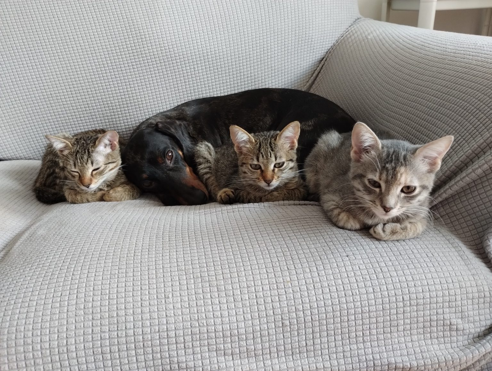
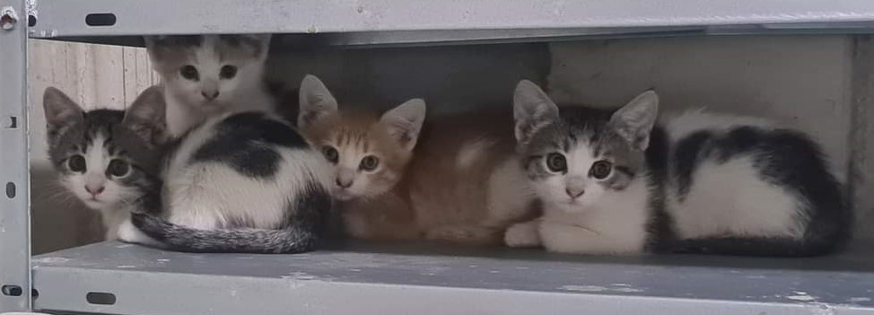

Fili
Mă cheamă Fili. Am trei luni și sunt un suflețel mare pe patru lăbuțe delicate. Îți dăruiesc toată energia, drăgălășenia și dragostea mea dacă promiți să ai grijă de mine și să mă iubești și tu. Sunt vaccinată și deparazitată. Vin eu la tine, nu te îngrijora că sunt prea departe.
4 pisici de doua luni
Oferim pentru adopție 4 pui și pentru mama lor. Cei 4 pui au în jur de 2 luni, mănâncă boabe și pliculeț, sunt foarte jucăuși și prietenoși, se înțeleg cu alte pisici. Asigurăm deparazitare, vaccinurile necesare și sterilizare la momentul potrivit. Oferim transport dacă sunteți în afara Craiovei.
Formular de adopție